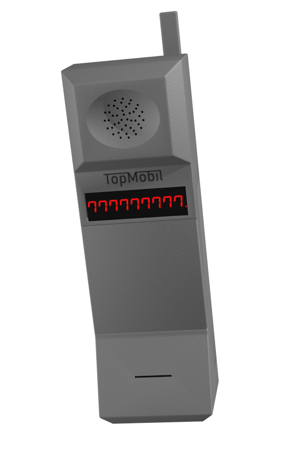

Specifikace
- Konektivita
- GSM 850/900/1800
- CDMA 800/850/1900
- Display
- Jednořádkový sedmisegmentový LED display
- Červené znaky
- 9 znaků na řádek
- Baterie
- Li-Pol
- 8000 mAh
- Pohotovostní výdrž až 1200 hodin
- Výdrž při hovoru až 24 hodin
- Klávesnice
- Mobilní
- 14 tlačítek
- Gumová tlačítka
- Možnost uložit až 99 čísel na předvolby
- Typ SIMkarty: MiniSIM
- 4 různá vyzvánění